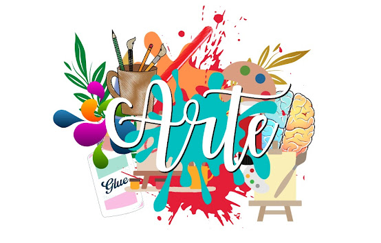

Professora: Jaqueline
Aulas: toda a Quarta-feira (08:00 às 09:30)
Em nossa primeira aula de artes, a professora explicou como seria as avaliações, aulas e etc. Disse também que nossas aulas seriam mais levadas para o lado musical da arte, pois essa é a especialidade dela, isso foi um ponto que me deixou muito feliz, porque gosto muito de música e assim as aulas se tornarão leves e agradáveis. Fizemos apenas uma atividade, que foi a seguinte: a professora pediu para fecharmos os olhos e prestar atenção em cada som presente na escola (passos, conversas, barulhos de objetos…), foi uma experiência boa e relaxante, depois conversamos sobre o som que cada aluno ouviu, eu por exemplo ouvi barulho de chaves, mas um colega meu ouviu os carros que passam na rodovia. Gostei muito do exercício, pois foi muito diferente de qualquer outra atividade feita, sempre eram feitos desenhos nas aulas de artes, mas dessa vez não, e isso me fez gostar da professora e também da matéria.
